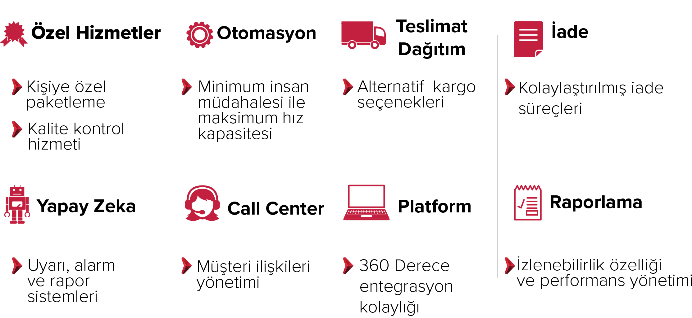

E-İhracat
Mikro İhracat Nedir?
E-ticaret ve küçük sevkiyat gönderimlerinde tercih edilen, alıcıya yurtdışı gönderilerini daha hızlı ve hesaplı yoldan ulaştırma gibi avantajları sağlayan mikro ihracat, 15 bin Euro altı ile 300 kilogram altı dış satımlar için kullanılabilmektedir.
Mikro İhracatın Avantajları
- Yurtdışındaki pazarlara giriş imkânı
- Daha az lojistik maliyeti
- Doğrudan tüketiciye ulaşma esnekliği
- Kolay ve hızlı gümrük süreçleri
E-İHRACATTA 0-2 kg bandını GENİŞLETİYORUZ
0-2 kg bandında sizi dünyayla buluşturmakla kalmıyor, ağır ve hacimli ürün gruplarınızda da deponuzdan tüketiciye kadar tüm lojistik süreçlerinizi sanki yurtdışında satış yapıyormuş gibi yönetiyoruz. Bu sayede, ofisleriniz ve acenteleriniz sadece satış ve pazar büyütmeye odaklanabilir.
- Ağır ve Hacimli Ürün Uzmanlığı
- Randevulu Teslimat Hizmeti
- Kapıdan Kapıya Teslimat
- Depo Bağımlılığına Son
E-Ticaret Lojistiği
80 Yılın lojistik birikimiyle e-ticarete özel hizmet verecek benzersiz bir e-depo inşa ettik. E-ticaret için tasarladığımız depoyu en modern teknolojilerle donattık. Bununla da yetinmeyip tüm süreci yapay zeka ile destekledik.
Fark Yaratan Çözümlerimiz
Lojislik Cüzdan
Nakliyat Cüzdan Nedir?
Nakliyat Cüzdan ön ödeme yaparak, hizmetlerimizi kullanmanızı sağlayan kurumsal bir Nakliyat yazılımıdır. Ürünlerinizin alınmasından başlayıp bayi veya nihai tüketicinize kadar olan tüm sevk süreçlerinizi daha uygun maliyet ile, daha hızlı ve daha avantajlı hale getirmektedir.
Nakliyat Cüzdan, IT alt yapımız ile çalışan teknolojisi sayesinde sizlere tüm sistemlerle entegre çalışabilen bir hizmet ağı sunar.
Nakliyat Cüzdan Özellikleri Nedir?
- Sizler için hazırlamış olduğumuz paketleri satın alarak Türkiye’nin 81 iline gönderim yapabilir, kredi kartı ile ve taksitli ödeme avantajlarımızdan faydalanabilirsiniz.
- Sistem içerisine tanımlanmış veya yeni tanımlayabileceğiniz ürün gruplarını seçerek sevk bilgisi oluşturabilirsiniz.
- Müşteri Portalı ekranından anlık gönderi takibi yapabilir veya müşterilerinize takip imkânı sunabilirsiniz.
- Taşıma anında veya sonradan oluşacak ek hizmet maliyetlerini kolayca ödeyebilir.
- Varış iline göre fiyat hesaplama yapabilirsiniz.
- İstediğiniz tarih aralığında, taşıma yapılan türe göre ekstre alabilir ve istediğiniz mail adresine gönderimini sağlayabilirsiniz.
- Bayi, ev teslimatı gibi hizmetleri kullanabilir, Tüketici Ürünleri, Beyaz Eşya, Mobilya gibi sektörlerde Horoz Lojistik fırsatlarından faydalanabilirsiniz.
- Yaşanan Hasar/Kayıp taleplerini aktif iletebilir, takibini yapabilir, karşılıklı etkin şekilde sonuçlandırılabilirsiniz.
- Hasar/Kayıp’tan oluşacak tutarı yine alacakları hizmet karşılığı bakiye olarak kullanılabilirsiniz.
- İstediğiniz zaman sistemden çıkabilir, bakiyenizi iade alabilir. İsterseniz sonra tekrar cüzdan kullanmaya devam edebilirsiniz.


Tel: (+90) 212 656 76 76
Fax: (+90) 212 656 76 35
web@bislogistics.com.tr
Akçaburgaz Mh. 3108 Sk.
No: 3/1 Kıraç 34522
Esenyurt / İstanbul
Bis Ulusal Lojistik deneyimli kadrosu ve hızlı servisi ile
gümrüklere, uluslararası nakliye şirketlerinin
depolama, ihracat ve ithalat taşımaları yapmaktadır.


Tel: (+90) 224 241 34 34
Fax: (+90) 224 242 68 52
bursa@bislogistics.com.tr
OSB Ali Osman Sönmez Blv.
1. Sok. No:2, 16140
Nilüfer / Bursa